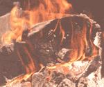
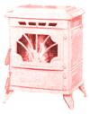

WOODSTOVE SPECIAL
Surefire ways to light up your woodstove
THE LITTLE CABIN THAT SERVES ME as library, study, and workshop was plenty cold this morning, as it is every morning this time of year. But within seconds of walking through the door, I had a fire roaring in the ancient Monkey Ward's potbelly over in the corner. Another 15 minutes and I was shedding shirts and closing dampers.
It's a wintertime routine I've come to cherish: In the late afternoon I allow the fire to die out. Then, just before leaving in the evening-after checking to see that no live coals are hibernating down in the ash pan-I crumple up a couple of sheets of newspaper and toss them into the back mouth of the stove. Over the wad of paper I arrange a tepee of six or eight finger-thick kindling sticks. I top the fuel pile off with a tepee of three medium-size splits of pine or aspen, then close the doors and dampers (insurance against a spontaneous nocturnal flame-up), refill the stove-top caffeine kettle with a fresh load of well water, then close up shop and hump the hill to home and hearth.
Next morning, as soon as I walk into the board-and-batten icebox, I open the stovepipe damper and the draft control in the bottom stove door, strike a match, touch it to the waiting burnables--and am instantly on my way to comfort and coffee.
Of course, my pyro technique wasn't always so surefire. Matter of fact, when I first began playing around with wood heat, I often ran through half a box of kitchen matches and a pint of charcoal lighter fluid--and got naught for my efforts but brief, explosive flames and choking clouds of smoke.
But we all have to start someplace. And since those unsuccessful early fires were more recreational than functional, it was no catastrophe when they (and 1) failed. These days, though, wood heat is the only heat up here on this cold old mountain. Either I get my fires started-and keep them going-or I freeze.
Across the years, I've committed most every flame-making mistake imaginable, but I learned from my failures (albeit slowly and sometimes painfully) and eventually triumphed in my quest for dependable fire.
To save you some of that frustration, I'd like to share a bit of what I've learned-all basic stuff. If you're an old hand at heating or cooking with wood, the primer that follows-drawn from personal experience tempered with the advice of experts-will probably be no more than a review. But if you're one of the roughly three-quarter million Americans who purchased a woodburning appliance-or a home containing one-within the last 12 months (approximately half of whom were first-time users) and are finding that starting a fire and keeping it going is more pain than pleasure, this one is for you.
To Build a Fire ...With Minimum Hassle
First, let's shoot down some common firemaking troubles. Most uncooperative tires can be traced to three causes: 1) damp wood, 2) improperly installed or tuned appliances, including fireplaces, or 3) a poor arrangement of fuel within the appliance.
You may have heard that firewood is best when dried to about 20% moisture content. To reach this 20%o goal, the experts advise, we should cut and split our wood to stove size chunks, stack it (preferably under a roof) so that air can circulate between pieces, and allow it to season for at least six months-a year is twice as good-before burning.
That's well-seasoned advice-but don't rely on it blindly. Drying time will be longer in high-humidity locales, shorter in arid climes; longer for wood cut green (live), shorter for splits from dead trees; and longer for some species of wood, shorter for others.
Slow ignition, poor burning, and lots of white smoke indicate unseasoned fuel; a split of firewood that has darkened at the ends and begun to check (crack) will usually light and burn readily. In short, get your winter's fuel in as early as possible, and if you buy your wood, don't trust that it will be delivered seasoned and you won't be disappointed. Store it properly, live an active, self-directed life, follow the Golden Rule, and you'll keep warm no matter how cold things get on the outside.
A second common cause of hard-starting and poor-burning fires is an improperly installed or tuned appliance. Most often, equipment-related burning problems can be traced to poor drafting due to a stovepipe that's either too short (it should project at least above the ridge of your roof) or of the wrong diameter. Also, an airtight house can starve a fire of the oxygen it needs for proper combustion (easily cured by cracking a window). If in doubt, ask an inspector from your local fire department or the dealer who sold you the stove to come out and critique your wood-burning setup.
Finally, many a fire is defeated from the outset by an improper arrangement of fuel. This can mean using too little kindling to ignite the larger splits, trying to make a fire with just one big log, or cramming too many logs into a stove or fireplace-leaving insufficient room for combustion air to circulate.
There are three basic requirements for starting and maintaining a fire in a woodstove: dry fuel, good drafting, and an arrangement of combustibles within the stove that will allow air to flow in beneath and rise up through it. I've already described my method for making flame in a potbelly stove (or any upright stove): a couple of sheets of crumpled newspaper in the bottom, a tepee of kindling arranged over the paper, a few medium size splits of a fast-burning variety of wood in a tepee over the kindling, open the draft control in the bottom stove door, open the stovepipe damper, set match to paper. Hot stuff.
Because a potbelly is taller than it is wide, fuel is fed in vertically through the top door. But most woodstoves today are boxy and wider than they are tall, allowing fuel to be loaded horizontally.
The big airtight box stove my wife supervises in the cabin up the hill is a modern variation of the old Ben Franklin design: rectangular with big double doors across the front. A common fire-building technique for this type of stove is to place a large split of firewood along the back wall of the appliance, a second split parallel to the first but as near the front as possible, a wad of crumpled newspaper between the two logs, several sticks of kindling atop the newspaper, and a roof of two or three medium-sized starter splits angled across the two bottom logs and spaced an inch or so apart. Or simply build a tepee of crumpled paper, kindling, and medium-size firewood splits in the center of the stove, as I do in my potbelly. With the fuel in place, open the stovepipe damper (if the unit has one) and the draft control, set match to paper, and leave the doors open (with the fire screen closed) until the action picks up (usually just a minute or so). Now close the stove doors, adjust the damper (if necessary; most are automatic these days), and relax with a good magazine.
Building a Fire in a Narrow Scandinavian-Type Box Stove
A variation on the first method I described for Franklin stoves: The arrangement of fuel is the same, but you insert the fuel from a narrow side of the stove, so that the two largest splits are at the sides of the stove rather than front or rear.
To Build a Fire in a Wood-Burning
Cookstove
I've owned only one wood cookstove thus far, a basket case on which I lavished an entire summer's spare time-identifying, sorting, cleaning, refinishing, and reassembling the puzzle-like parts-after which I up and moved 2,000 miles and had to leave the weighty little beauty behind. So the advice that follows isn't from personal experience but from a timeless treasure of wood cookstove lore, a little 1925 booklet called The Secret of Better Baking, by Mary D. Chambers:
"If a match is lighted, the flame shoots upward. The hot blaze causes a draft, drawing fresh air from below and supplying the oxygen necessary for combustion. The [wood-burning] range simply makes use of this basic principle on a large scale. To start the fire, then, have on hand plenty of free-burning fuel-dry paper and wood cut small. A folded newspaper will not burn freely, but a few sheets, lightly twisted, make a good first layer. Then add a moderate supply of kindling wood, laid in loosely. Before lighting, open the door or vent under the fire, the direct draft to the chimney (over the oven), the check-slide at the base of the smoke pipe, and the damper in the smoke pipe. The purpose is to promote a free passage of air up through the firebox to the chimney by the most direct route.
"Light the fire from below and allow it to get a good start. If it burns too slowly, it needs more oxygen, which can be supplied by opening the door wide under the fire. If it burns too fast, it will produce more smoke than the chimney can draw off, and the excess will be thrown into the room. Partly closing the door under the fire will retard it. Before applying larger pieces of wood or coal, add a little more kindling. The grate should be well-covered with a brisk fire, both to support and ignite the larger fuel evenly and to prevent waste through the gate. When the bigger fire has a good start, the oven damper may be closed.
"The process of keeping up a good fire is merely one of adding more fuel, and occasionally `shaking down' to remove the ashes under the fire. Do not allow ashes to collect close up under the grate. They will kill the tire and cause the hot coals above to burn out the grate.
"If the draft of air through the firebox continues unchecked, the fuel soon burns out, and the top of the range gets red-hot-a bad thing for the stove. The fire needs to be curbed. This may be accomplished in various ways: by closing tight the door and slide under the fire, by partially closing the damper in the stovepipe or pushing in the slide near the stovepipe collar on top of the range, by opening the slide in the broiler door at the end of the range over the fire, or by tipping or covers over the fire.
"The chimney keeps pulling for air, and the fire is checked by reducing the amount of suction or by allowing the air to rush in over the fire, instead of through it."
To Build a Fire ...Using Shortcuts?
In addition to newspaper and kindling, other popular fire-starters include kerosene, charcoal-lighter fluid, lightwood, and a wide array of concoctions.
I know one fellow who keeps a pint of deodorized kerosene in a plastic squeeze bottle stored safely away from his woodstove. After laying a fire, he squirts a little kerosene on the kindling, returns the bottle to its corner, then lights the fire. Since kerosene burns as a liquid rather than a vapor, there's no danger of an explosion in a cold stove, as there would be gasoline or a Coleman-type fuel.
This fellow and others I know have used kerosene as a fire starter for years without burning their houses down or themselves up. But I doubt that one professional firefighter in a thousand would endorse such a shortcut. At the very least, never squirt kerosene or lighter fluid on open flame or glowing coals; the heat will vaporize the liquid, creating a decidedly explosive situation.
Lightwood is kindling split from a heavily resinous wood such as eastern pitch pine, or from the sappy portions of most any conifer. Lightwood is a safe and reliable fire starter when used in small quantities. If you know of an old pine stump that's been hunkering out there sucking up resin from its roots for some years now, split off a few small kindling sticks and give them a try. Generally, one lightwood stick at the bottom of a kindling pile will do the trick, relieving you of the inky chore of crumpling up newspaper. Commercial fire start-ers? The few I've tried all work and are perfectly safe when used as directed. But they're pretty expensive for daily use, and-once you've mastered the basics-they're superfluous as well.
To Build a Fire ...With What's Available
No matter the configuration of your wood burner--woodstove or cookstove-you'll do well to use softwoods (pine, spruce, fir), poplars (including aspen and cottonwood), or untreated lumber scraps for kindling and starter splits. When the fire gets to cooking, switch to hardwood for a long, hot burn. For an aromatic flourish, toss in a split or two of smell good wood such as cedar, juniper, pinon, mesquite. apple, orange, cherry, pecan, or hickory. Thus, a perfect firewood pile might consist of about 25% softwoods (and soft "hardwoods") for kindling and starter splits, and 75% hardwoods-including some of the aromatic varieties-for serious fuel.
Of course, life is rarely perfect. But a good fireplace or stove will digest just about any sort of dry wood you feed it, and give a good measure of heat in return. Accordingly, I've come to believe that the "best" firewood is that which is easiest to lay my hands on. When I was living in the Appalachians, I burned hardwoods because 1 was surrounded by mountains of the stuff. Here in the Rockies, I burn mostly quaking aspen-a very soft hardwood that's generally considered to be marginal fuel at best. But aspen is easy to cut and split, light (when dry) to tote or toss around: it seasons quickly, burns with little smoke and, therefore, with virtually no creosote, has a pleasant, spicy aroma-and I'm now surrounded by mountains of that stuff. So what the heck. When you're hot, you're hot.
WHAT TO DOWITH ASHES
LOOKING AI THINGS ECOLOGICALLY, ASHES belong on the ground. By sprinkling ashes on the soil in the forest or woodlot, we complete one of nature's great cycles. The mineral substances in the ashes are available to make new wood. and all we've really taken out of the forest is renewable solar energy.
Other Uses for Wood Ashes:
Fertilizing the garden. Wood ashes contain significant amounts of several minerals essential to the healthy growth of plants. They also contain potash, which is useful for neutralizing excess acidity in some soils. It is best, however, to remember that sonic plants do best in soils that are on the acid side. Garden-supply houses sell inexpensive kits for determining whether soil is acid or alkaline.
Wood ashes should be stored in a dry place if they are to be used as fertilizer, because water will leach away several important minerals. To enrich the ashes even further, burn bones from the table in the stove. They will crumble to powder, adding calcium, phosphorus, and other elements to the ashes.
Making alkali. Soap is made from fat and lye. In the old days, lye was made by trickling water through wood ashes and boiling down the resulting liquor to concentrate the alkali. For best results. use rain or snow water (which has minimum mineral content) and boil it first (to remove carbon dioxide). Do not use iron or aluminum vessels at any stage of the process, because they are affected by alkalis.
Melting snow. A thin layer of wood ashes on snow will encourage more rapid melting, since the dark ashes absorb sunlight. This is a handy trick for clearing the garden and allowing the sun to warm the bare earth a bit sooner in the springtime.
Deodorizing outhouses. A layer of ashes forms a physical barrier to odor, and the alkalinity interferes with bacterial action and the growth of fly larvae. For best results, keep a can of ashes right inside the privy and apply a small amount daily.
|
 The Whitfield Renaissance Pellet Stove, by Pyre industries (Burlington, WA), emits only .4 g/hr and operates of 82% efficiency. |
 |
|